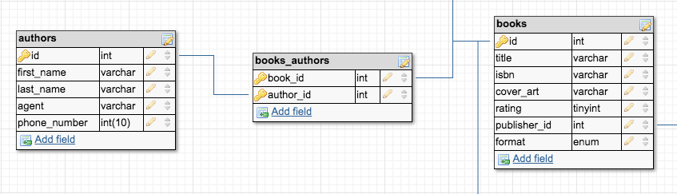
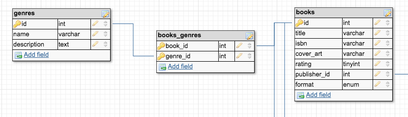
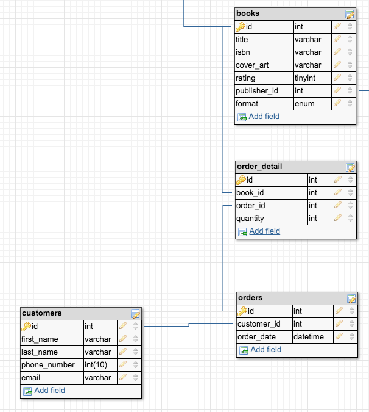
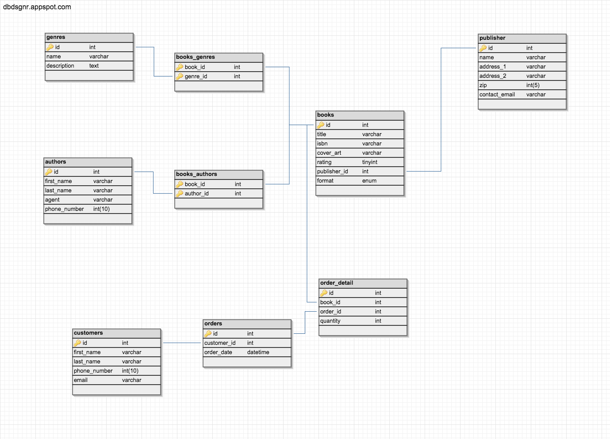

The Basics of Database Design
(stay awake, it isn't that bad)
David Stanley
- Technical Architect for MMGY Global
- 10 years in software engineering
- Started as a POS DBA. MCDBA on MSSQL 2000
- @davidstanley01
Assumptions and Disclaimers
- Everyone in here is familiar with database tables
- Everyone in here can write a basic SQL statement
- This example will not cover everything
- Focus is on relationships and structures, not data types
- The more complex the data, the longer it will take to derive the structure
- We only have about 45 minutes
Outline
- First, we start with a context - The Bookstore
- Then, some general concepts
- Initial identification of data concepts
- Table structure and normalization
Let's Build a Bookstore
Our Data
- Books
- Authors
- Publishers
- Genres
- Customers
- Orders
Data Concepts in the Bookstore
Books
- Authors
- Title
- Publisher
- Cover Art
- ISBN Number
- Rating
- Format (hardcover, paperback, or audio)
- ... and lots of other attributes
Authors
- First Name
- Last Name
- Agent
- Contact Info
Publishers
- Name
- Address
- Wholesaler
- Contact Info
Genre
- Science Fiction
- History
- Thriller
- Drama
- Comedy
- ... and lots more
Customers
- Name
- Address
- Phone Number
- Email Address
- ... and lots more
Orders
- Order date
- Books
- Quantity
- Unit price
- Total
Relationships and Rules
- One publisher can have many books, while each book has only one publisher
- One author can have many books, while each book may have multiple authors
- Books can be in multiple genres at once
- A customer can order multiple books in a single order
SQL
-
DDL - Data Definition Language
CREATE, DROP, ALTER statements
-
DML - Data Manipulation Language
SELECT, INSERT, UPDATE, DELETE statements
-
DCL - Data Control Language
GRANT, REVOKE statements
Primary Structures
- Table
- View
- Trigger
- Stored Procedure
Table
A workbook in your spreadsheet, plus some rules and stuff
CREATE TABLE `genres` (
`id` INT NOT NULL AUTO_INCREMENT,
`name` VARCHAR,
`description` TEXT,
PRIMARY KEY (`id`)
);
View
The saved/cached output of a query... sort of
Materialized vs non-materialized
CREATE VIEW `simple_view` AS
SELECT u.first_name,
u.last_name,
b.name
FROM users u,
businesses b
WHERE u.business_id = b.id;
Trigger
An event listener, but inside the database
CREATE TRIGGER sanityCheck
BEFORE INSERT ON my_table
FOR EACH ROW
BEGIN
IF something THEN
SET NEW.S_ID = 0;
END IF;
END;
Stored Procedure
Encapsulated bundle of logic and pain
CREATE PROCEDURE user_count(OUT param INT)
BEGIN
SELECT COUNT(*) INTO param FROM database.user;
END;
CALL user_count();
+------+
| 3 |
+------+
Normalization

http://www.epikos.org/wp-content/uploads/2014/05/normal12.jpg
First Normal Form (1NF)
- No duplicate columns in a row
- Each row identified by a unique attribute (either single column or tuple of multiple columns)
- Each book has a unique
book_id
Second Normal Form (2NF)
- Must meet 1NF
- Repetitive data removed to separate table
- Relationship to table enforced by foreign keys
- A publisher is associated with a book through the inclusion of a
publisher_idcolumn on thebookstable
Third Normal Form (3NF)
- Must meet 2NF
- Remove any columns not related to or wholly dependent upon the primary key
- In our
orderstable, thetotalcolumn is a derived value, dependent upon quantity and price
Boyce-Codd Normal Form (BCNF or 3.5NF)
- Must be in 3NF
- Every determinant must be a candidate key
- The
customer_idvalue identifies thefirst_nameandlast_name - The
first_nameandlast_namecan be used to determine thecustomer_idvalue
Fourth Normal Form (4NF)
- Must be in 3NF (BCNF not necessary)
- No multi-valued dependencies
- Having a book with "audio" type does not imply that it must also have a "hardcover" or "paperback" type
Keys
- Primary
- Foreign
- Unique
- Composite
- Surrogate
Indexes
- Clustered vs Non-clustered
- Primary Keys are automatically indexed (clustered)
- You can have multiple non-clustered indexes
Resolving Relationships and Storing Attributes
Think about the queries when designing the structure
Publishers
CREATE TABLE `publishers` (
`id` INT NOT NULL AUTO_INCREMENT,
`name` VARCHAR,
`address_1` VARCHAR,
`address_2` VARCHAR,
`zip` INT(5),
`contact_email` VARCHAR,
`publisher_id` INT,
PRIMARY KEY (`id`)
);
Authors
CREATE TABLE `authors` (
`id` INT NOT NULL AUTO_INCREMENT,
`first_name` VARCHAR,
`last_name` VARCHAR,
`agent` VARCHAR,
`phone_number` INT(10),
PRIMARY KEY (`id`)
);
Genres
CREATE TABLE `genres` (
`id` INT NOT NULL AUTO_INCREMENT,
`name` VARCHAR,
`description` TEXT,
PRIMARY KEY (`id`)
);
Books
CREATE TABLE `books` (
`id` INT NOT NULL AUTO_INCREMENT,
`title` VARCHAR,
`isbn` VARCHAR,
`cover_art` VARCHAR,
`rating` TINYINT,
`unit_price` DECIMAL(8,2),
PRIMARY KEY (`id`)
);
ALTER TABLE `books` ADD CONSTRAINT `books_fk1`
FOREIGN KEY (`publisher_id`) REFERENCES publishers(`id`);
Books and Authors
One author can have many books, while each book may have multiple authors (many-to-many)

CREATE TABLE `books_authors` (
`book_id` INT NOT NULL AUTO_INCREMENT,
`author_id` INT NOT NULL AUTO_INCREMENT,
PRIMARY KEY (`book_id`,`author_id`)
);
ALTER TABLE `books_authors` ADD CONSTRAINT `books_authors_fk1`
FOREIGN KEY (`book_id`) REFERENCES books(`id`);
ALTER TABLE `books_authors` ADD CONSTRAINT `books_authors_fk2`
FOREIGN KEY (`author_id`) REFERENCES authors(`id`);
Books and Genres
Books can be in multiple genres at once, while a single genre can have many books (many-to-many)

CREATE TABLE `books_genres` (
`book_id` INT NOT NULL AUTO_INCREMENT,
`genre_id` INT NOT NULL AUTO_INCREMENT,
PRIMARY KEY (`book_id`,`genre_id`)
);
ALTER TABLE `books_genres` ADD CONSTRAINT `books_genres_fk1`
FOREIGN KEY (`book_id`) REFERENCES books(`id`);
ALTER TABLE `books_genres` ADD CONSTRAINT `books_genres_fk2`
FOREIGN KEY (`genre_id`) REFERENCES genres(`id`);
Customers
CREATE TABLE `customers` (
`id` INT NOT NULL AUTO_INCREMENT,
`first_name` VARCHAR,
`last_name` VARCHAR,
`phone_number` INT(10),
`email` VARCHAR,
PRIMARY KEY (`id`)
);
Books and Orders and Order Details
An order may contain multiple books for a single customer

CREATE TABLE `orders` (
`id` INT NOT NULL AUTO_INCREMENT,
`customer_id` INT,
`order_date` DATETIME,
PRIMARY KEY (`id`)
);
ALTER TABLE `orders` ADD CONSTRAINT `orders_fk1` FOREIGN KEY (`customer_id`) REFERENCES customers(`id`);
CREATE TABLE `order_detail` (
`id` INT NOT NULL AUTO_INCREMENT,
`book_id` INT,
`order_id` INT,
`quantity` INT,
`format` ENUM,
PRIMARY KEY (`id`)
);
ALTER TABLE `order_detail` ADD CONSTRAINT `order_detail_fk1` FOREIGN KEY (`book_id`) REFERENCES books(`id`);
ALTER TABLE `order_detail` ADD CONSTRAINT `order_detail_fk2` FOREIGN KEY (`order_id`) REFERENCES orders(`id`);
The Whole Thing
Helpful Views
"I need to see every order from the last week with quatity of items ordered, total price, order date, customer's full name and customer's phone number"
Option 1
Run the same query every time
SELECT orders.date,
customer.first_name +' '+ customer.last_name,
customer.phone_number,
customer.email,
(SELECT sum(order_detail.quantity)
FROM order_detail, orders
WHERE orders.date >= now()
AND orders.id = order_detail.order_id) as quantity,
(SELECT sum(order_detail.quantity * books.unit_price)
FROM order_detail, orders, books
WHERE orders.date >= now()
AND orders.id = order_detail.order_id
AND books.id = order_detail.book_id) as total
FROM orders, order_detail, customers, books
WHERE orders.date >= now()
AND customer.id = orders.customer_id;
Option 2
Create a view off that query, and then just query the view
CREATE VIEW order_summary AS
SELECT orders.date,
customer.first_name +' '+ customer.last_name as name,
customer.phone_number,
customer.email,
(SELECT sum(order_detail.quantity)
FROM order_detail, orders
WHERE orders.id = order_detail.order_id) as quantity,
(SELECT sum(order_detail.quantity * books.unit_price)
FROM order_detail, orders, books
WHERE orders.id = order_detail.order_id
AND books.id = order_detail.book_id) as total
FROM orders, order_detail, customers, books
WHERE customer.id = orders.customer_id;
SELECT * FROM order_summary WHERE orders.date >= now();